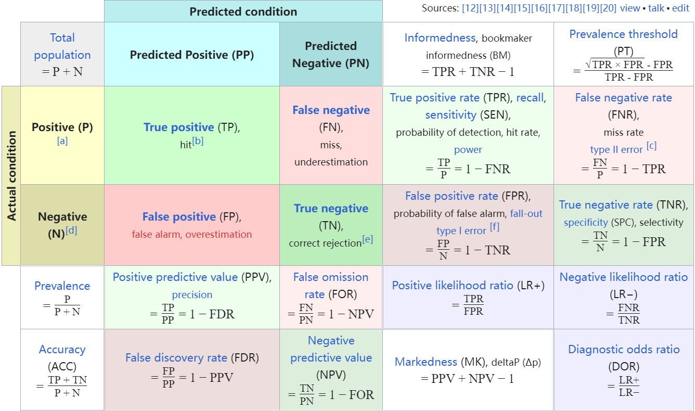
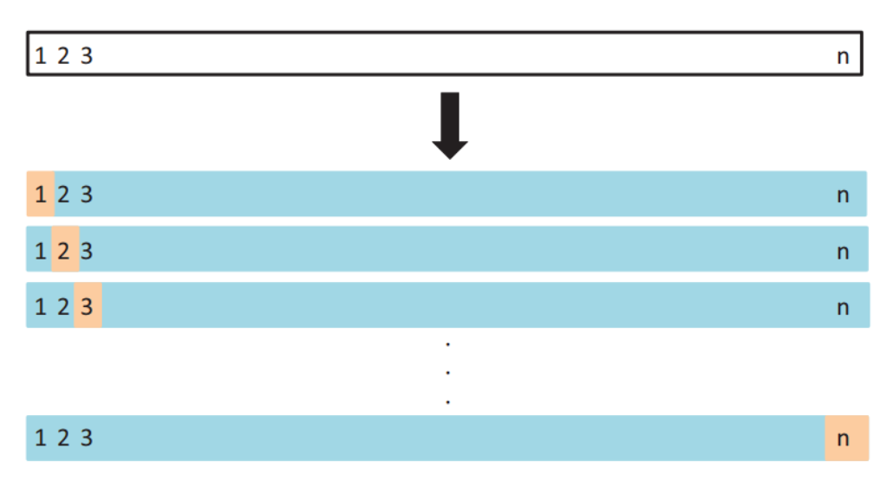
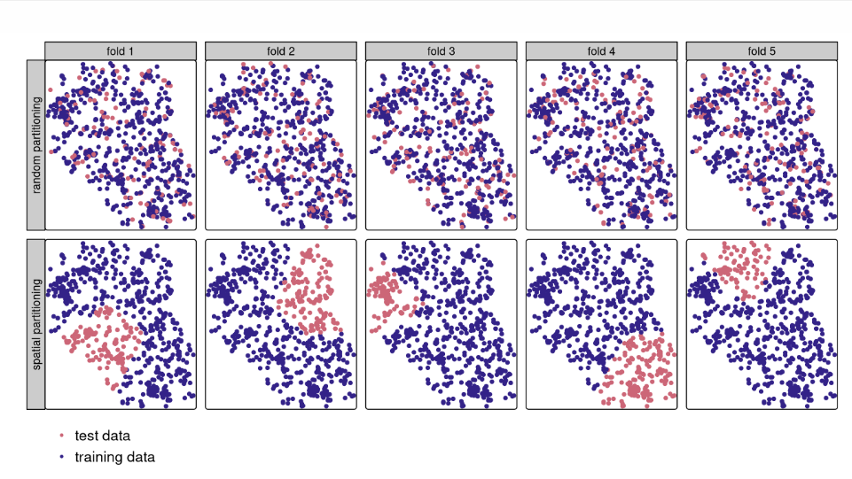

7 Classification II
7.1 Summary
7.1.1 Definition
OBIA: - Superpixels = Consider shapes based on the similarity (homogeneity) or difference (heterogeneity) of the cells
7.1.2 Part 1: Land Cover Classification
Object based image analysis (OBIA)
Most common method: SLIC (Simple Linear Iterative Clustering)
- work out spatial distance (from regular points on the image to centre of pixel) and colour difference
- Package: SegOptim
Sub pixel analysis
Remotely sensed images often present a mix of both pure and mixed pixels. Traditional hard classification methods assign mixed pixels to the class with the highest coverage or probability, inevitably leading to information loss. To address this issue, soft classification techniques have been introduced. These methods allocate pixel fractions to the corresponding land cover classes based on the area represented within a pixel. However, this approach does not provide information about the spatial distribution of these fractions within the pixel.
Atkinson (1997) proposed a solution by suggesting the spatial assignment of fractions to sub-pixels within each pixel. This divides every pixel into a predefined number of sub-pixels, enabling a more detailed representation of lower-resolution pixels. Sub-pixel mapping algorithms have been applied in various forms and on fraction images with different spatial resolutions. However, assessing the accuracy of these algorithms poses challenges due to the lack of high-resolution ground truth imagery.
To overcome this limitation, high-resolution reference classifications are degraded to generate artificial fraction images. These artificial fraction images are then used as input for the sub-pixel mapping process, with the original reference image serving as ground truth. This approach facilitates the accuracy assessment of sub-pixel mapping algorithms. This study aims to utilize identical reference images across different sub-pixel mapping techniques, enabling a comparative evaluation of their performance.
EXAMPLE:
| band | water | vegeration | soil |
|---|---|---|---|
| 3 | 13 | 22 | 70 |
| 4 | 5v | 80 | 60 |
Step 1: take the inverse matrix of endmembers
\[\begin{align*} \begin{bmatrix} 13 & 22 & 70\\ 5 & 80 & 60\\ 1 & 1 & 1 \end{bmatrix} \to \begin{bmatrix} -0.0053 & -0.0127& 1.1322\\ -0.0145& 0.0150 & 0.1137\\ 0.0198 & -0.0024 & -0.2460 \end{bmatrix} \end{align*}\]Step 2: solve if band 3 = 25 and band 4 = 57
\[\begin{align*} \begin{bmatrix} f_{\text{water}} \\ f_{\text{veg}}\\ f_{\text{soil}} \end{bmatrix} &= \begin{bmatrix} -0.0053 & -0.0127& 1.1322\\ -0.0145& 0.0150 & 0.1137\\ 0.0198 & -0.0024 & -0.2460 \end{bmatrix}\begin{bmatrix} 25 \\ 57\\ 1 \end{bmatrix} \end{align*}\]Thus get:
\[\begin{bmatrix} 0.27 \\ 0.61\\ 0.11 \end{bmatrix}\]27% water, 61% vegetation and 11% soil
7.1.3 Part 2: Accuracy

Confusion matrix
wiki:confusion_matrix
Kappa
- \(k = \frac{p_{o}-p_{e}}{1 - p_e}\)
- \(p_o\): the propotyion of cases correctly classified(accuracy) \(=\frac{TP+TN}{TP+TN+FP+FN}\)
- \(p_e\): expected cased correctly classified by chance
F1-score
- \(F1 = \frac{2*Precesion*Recall}{Precision+Recall}\) or
- \(F1 = \frac{TP}{TP+\frac{1}{2}*(FP+FN)}\)
- values from 0 to 1, larger F1-score, better performance.
ROC curve
- \(True\ positive\ rate = \frac{TP}{TP+FN}\)
- \(False\ positive\ rate = \frac{FP}{FP+TN}\)
- Goal: Maximise true positives and minimise false positives
- Area Under the ROC Curve (AUC, or AUROC): Perfect value will be 1, random will be 0.5
7.1.4 Cross Validation
Dividing the data set into the training set and the test set, using only one data set as the test set and all the other data as the training set, repeats this step N times (N is the number of data in the data set).

Spatial cross validation: same as cross validation but with clustering to the folds

7.2 Application
The various accuracy tests we spent a large part of the lecture talking about are actually some fixed methods for scoring models. They are used to analyze the results of almost all models. At the same time, they have little room for research.
As for spatial cross-validation, many papers will apply this validation method to reduce the influence of spatial dependence structure between data on fitting and prediction ability.Especially in recent years, it seems that the effect of spatial dependence on model results has been noticed by more and more researchers.(Deppner and Cajias 2024; Beigaitė, Mechenich, and Žliobaitė 2022; Allen, Kim, and Yang 2020) Before looking for relevant materials, I thought that this method was a verification method similar to confusion matrix. In fact, to my surprise, some scholars are still considering how to improve this method.
Le Rest et al. (2014)’s research assesses an alternative method employing a spatial cross-validation technique. While this technique is typically utilized for model assessment, it can also yield valuable insights for variable selection in the presence of spatial autocorrelation. The study proposes the use of a specific form of spatial cross-validation known as spatial leave-one-out (SLOO), which offers a criterion akin to the AIC when spatial autocorrelation is absent. SLOO exclusively computes non-spatial models and employs a threshold distance (equivalent to the range of RSA) to ensure spatial independence for each omitted point. The study initially conducts simulations to compare SLOO’s performance with that of AIC. It proves particularly advantageous when the range of RSA is limited, a characteristic often observed in spatial tools. Consequently, SLOO emerges as a promising approach for selecting pertinent variables from a wide range of ecological spatial datasets.
7.3 Reflection
I found the exploration of spatial cross-validation particularly intriguing. While I initially perceived it as a standard validation method, Le Rest et al. (2014)’s research introduced me to the concept of spatial leave-one-out (SLOO) cross-validation. This innovative approach, which accounts for spatial autocorrelation, showed promise in variable selection for ecological spatial datasets. It was fascinating to learn about ongoing efforts to refine and improve spatial validation techniques, highlighting the dynamic nature of research in this field.